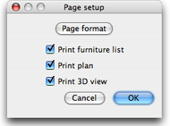
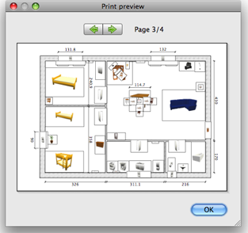

| Printing a home | |||
To print a home, choose File > Print.... By default, Sweet Home 3D prints the furniture list, the plan and the current 3D view of a home, using default paper
size, margins and orientation.  In the page setup pane, you may change paper size and orientation by clicking on the Page format button. You can choose also if the furniture list, the plan and the 3D view of a home should be printed or not. To preview your page setup at screen, choose File > Print preview....  In the print preview pane, you can see how a home will be printed page by page. To change the previewed page, click on the arrows at the top of the pane or press the arrow keys. |
|